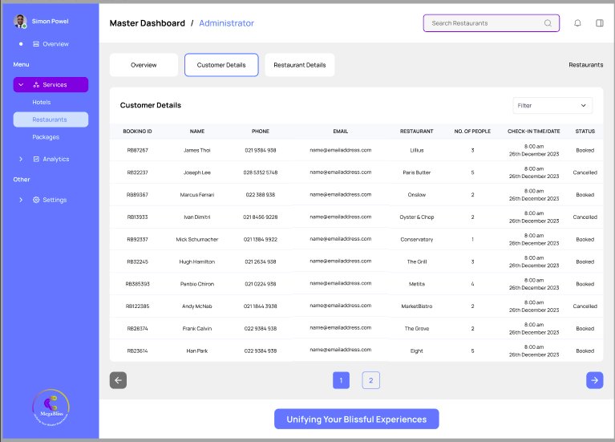

My Journey as an Intern at MegaBliss Worldwide
During my time as an intern at MegaBliss Worldwide, I had the exciting opportunity to work on an upcoming full stack website for the company. MegaBliss Worldwide specializes in creating booking platforms for service providers, hotels, and packages, helping travelers find and book the perfect services for their needs.
The Project: Building a Full Stack Website
The project I was involved in was a comprehensive platform aimed at streamlining the booking process for users while providing service providers and hotels with a robust system to manage their offerings. The platform needed to be intuitive, responsive, and scalable to handle the diverse needs of users across the globe.
Challenges and Learning Experiences
Working on this project presented several challenges that ultimately became invaluable learning experiences. One of the key challenges was ensuring the seamless integration between the front-end and back-end components, particularly when dealing with complex booking workflows that required real-time updates and notifications.
I also had to ensure that the platform could scale effectively to handle a growing number of users and bookings. This involved optimizing the codebase, fine-tuning database queries, and implementing caching strategies to reduce load times and improve overall performance.
